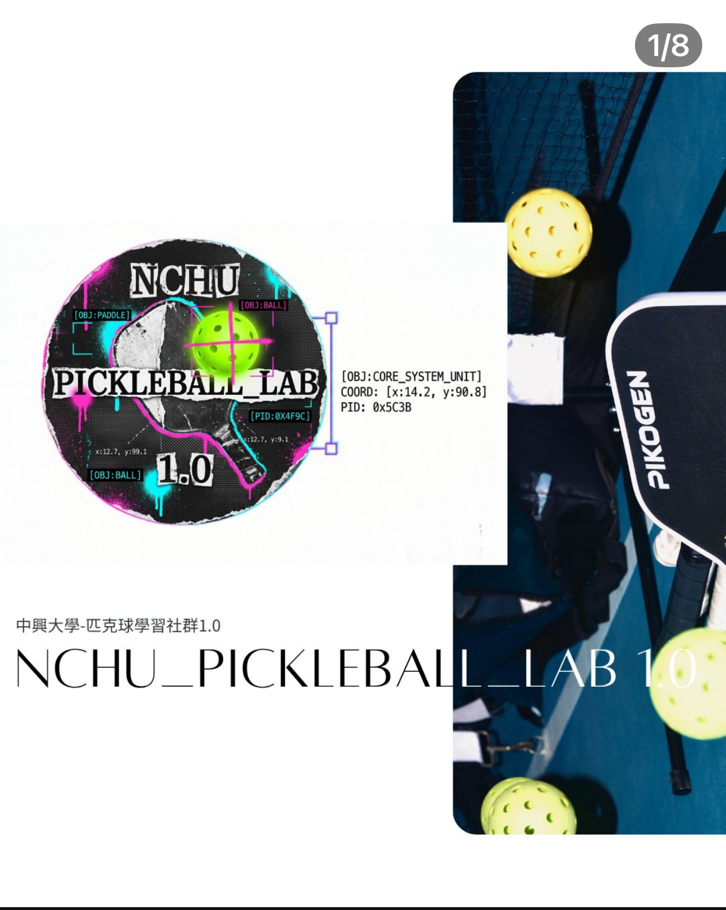
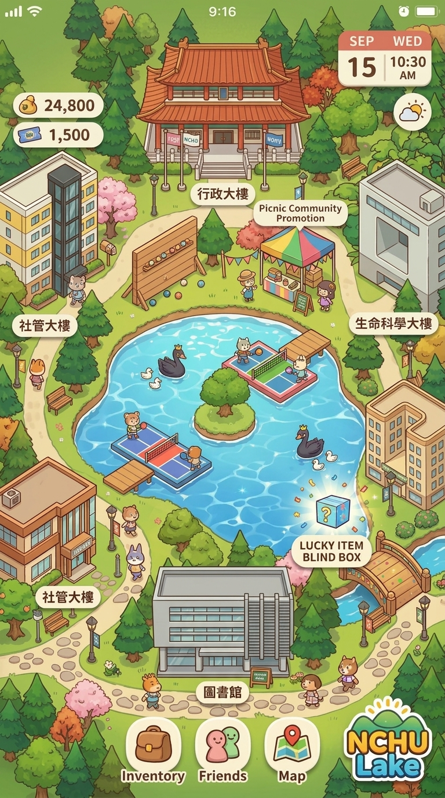

歡迎來到中興湖!小心會追人的匹克鵝(我真的看過學長在那邊跌倒),買不到的中興奶茶、還沒嗑到的揚州炒飯,接著挑戰匹克鵝大魔王
修改後將同步更新個人名片、選手證與校園英雄榜。
設定會自動記憶到本機，打球更具手感。
Google 開發的裝置端即時人體姿態估計方案,單張 RGB 影像即可推論 33 個 3D 人體關節點(含 x、y 與相對深度 z)。採兩階段架構:先以偵測器定位人體區域, 再由追蹤器回歸關節座標;後續影格沿用前一幀的 ROI 以省去重複偵測, 因此能在手機 CPU/GPU 上維持即時效能。
以雙肩距離作為尺度基準歸一化,讓判定不受玩家距鏡頭遠近影響; 並以肩–髖距離作為解剖學標尺,將手腕高度換算為「相對腰部的比例」, 據此執行匹克球「下手發球須低於腰部」的規則判定。 力道取手腕速度峰值與揮拍軌跡總長加權合成, 避免加速度放大單鏡頭骨架的抖動雜訊。
單鏡頭骨架座標存在數個像素的抖動,直接連續映射為擊球方向會產生漂移。 我們改採離散分區 + 遲滯 + 停留確認,並讓拍面自動追球, 設計取向近似早期 Kinect 體感遊戲。這個概念驗證證明了不需要高昂遊戲主機也能玩體感遊戲; 順便臭一下——Switch 等平台之所以仍需手持感測器, 主因是 IMU 的取樣率與角速度計算精度目前遠高於單鏡頭視覺估計。
球體飛行軌跡由重力、平方空氣阻力與馬格努斯力 (Magnus Force) $\vec{F}_M \propto (\vec{\omega} \times \vec{v})$ 共同主導。 匹克球特有的 26~40 個穿孔結構在球後方引發早期紊流分離（Turbulent Wake Separation），產生高壓差阻力與角動量自然耗散特性，兼顧體感可控性與物理真實度。
| # | 模式 | 時間 | 關卡 | 動作 | 初速 | 力道 | 側旋 (Spin) | 動力鏈時序 | 手肘佔比 | 下盤重心 | 判決結果 |
|---|---|---|---|---|---|---|---|---|---|---|---|
| 尚無擊球紀錄，請揮拍或發球… | |||||||||||
單打為 11 分制且須領先 2 分獲勝。採發球得分制 (Side-out)：唯有發球方獲勝方可得分；接發方獲勝則轉換發球權。偶數分由右發、奇數分由左發。
必須為自下而上揮拍，擊球點低於腰部，拍頭最高點低於手腕。雙腳須位於底線後方，球必須對角越過廚房線進入對面發球區。發球限時 10 秒。
接發球方必須讓球落地彈跳一次方可擊球；回擊後，發球方也必須讓球落地彈跳一次方可擊球。雙方各完成一次彈跳後，始開放凌空截擊 (Open Play)。
球網兩側各 7 英尺 (2.13m) 區域為非截擊區。嚴禁在廚房區內凌空截擊（球落地後方可進入擊球）。若截擊後因慣性踩入廚房區，亦判定為失誤。
對打時邊線、底線與中線壓線皆為界內 (IN)；唯獨發球時壓非截擊區線判定出界 (OUT)。對打中觸網但過網落入界內算活球；允許繞柱球 (ATP)。
活球中球觸及球員身體即判該球員失誤；身體或球拍觸網或越過中線判失誤；單一回合中兩次獨立揮拍擊球屬連擊失誤；嚴禁脫手擲拍。
很多同學以為球會轉彎只是「手腕甩出的角度」，其實背後是流體力學百年經典的馬格努斯效應 (Magnus Effect)。
球在空中自轉時就像一顆微型小風扇：順著風的那一側空氣被加速（低壓被吸引）、逆著風的那側空氣撞擊減速（高壓向外推）。兩側巨大氣壓差化身成一隻看不見的空氣大手，硬生生把球推向低壓側，形成神奇的空中弧線！
🎾 上旋球 (Topspin / 急墜過網)：
由下往上刷球使球向前翻滾。球上方空氣逆風變慢（高壓）、下方順風變快（低壓）。大氣壓力從上往下猛壓，大力抽球也能像巡弋導彈般緊貼球網急墜界內！
🪶 下旋切球 (Backspin / 滯空平飄)：
由上往下削切使球向後自轉。球上方氣流加速產生向上升力（如直升機），球在空中長時間漂浮、過網極低，落地後彈跳低且自帶煞車減速。
🍌 側旋切球 (Sidespin / 繞柱香蕉球)：
揮拍橫向刷擦使球水平自轉。側向氣壓差讓球在空中橫向大幅外拐，能打出繞過球網側柱的驚艷繞柱球 (ATP, Around The Post)！
網球、棒球都是毛面或縫線實心球，為什麼匹克球偏偏要打滿圓孔？這正是它能成為老少咸宜、全民運動的空氣動力學秘密：
🌬️ 防海風吹偏：發源於西雅圖外島，孔洞讓強風穿透，不至於被海風吹跑。
⚖️ 自旋角動量耗散：氣流穿梭內部會迅速耗散自旋，使球弧線微幅穩定、絕不神經質亂竄，手腕零負擔。
本遊戲 3D 物理引擎以半隱式 Euler（固定步長 h = 1/120 s）數值積分求解下列方程式，可用下方按鈕切換兩種模式：
vx,z ← vx,z·(1 − 0.09h)ax = 3.6·spin·(0.8 + 0.2·|vz|/8)a = −k|v|v，k = ½CdρA/m ≈ 0.0588 m⁻¹；以隱式形式 v ← v/(1+k|v|h) 更新a = ½CLρA|v|²/m，方向為 ω×v；CL ≈ 0.8·S（S = Rω/|v|），上限 0.25本專案之「🪰 仿生蒼蠅 (Fly Opponent)」敵方 AI 依據普林斯頓大學神經科學研究所 (Princeton Neuroscience Institute) 主導之 FlyWire 國際全腦連接組聯盟 (Whole-Brain Drosophila Connectome Consortium) 2024 年發表於國際頂尖期刊《Nature》之最新開源圖譜資料與神經運動突觸迴路建構：
LOOMING_REFLEX。蒼蠅振翅飆至 125Hz，以 $22\,\text{m/s}$ 瞬移，並啟動 DNa01 急轉向對角算法，呼叫 solveArc 內建 $1.25\times$ 高速初速，回擊壓在對手對角底線死角（$z \in [5.8\text{m}, 6.1\text{m}]$），精確懲罰無腦抽球！
STUNNED（複眼視盲墜地），高度掉至 $0.08\,\text{m}$ 側翻眩暈 2.2 秒，雙翼減速至 14Hz 且完全無法揮拍，球彈跳兩次玩家穩穩得分！
2024 年 10 月，《Nature》期刊以封面專題重磅發表了人類科學史上首個完整的成年動物全腦連接組——普林斯頓大學 FlyWire 聯盟歷時數年重建的黑腹果蠅（Drosophila melanogaster）全腦神經圖譜。
當獵食者逼近或匹克球高速朝果蠅飛來時，果蠅複眼中的視覺神經元（LC4、LPLC2）會以光學逼近角擴張率 dθ/dt 偵測危險，並在極短時間內將訊號匯聚至大腦中央一對直徑巨大的神經元——巨大纖維 (Giant Fiber, GF，aka 捷安特腳踏車神經 🚲，再次強調純屬諧音梗開玩笑亂講ㄉ千萬不要寫在生物期末考卷上喔！)。
本遊戲 AI 的神經決策層以半隱式 Euler 數值求解自適應漏電整合發放方程（LIF with Spike-Frequency Adaptation）與突觸囊泡耗竭動力學：
可在球場上的「FLY-SNN 示波器」隨時點擊切換以下 6 種神經性格特徵：
「這是一場超棒的友誼賽！村長鵝給了你一個大大的擁抱～」

🏓通過教務處學生學習社群計畫，從 114-2 開始從零打造的中興匹克球推廣組織！我們正在做的事：📣 校園推廣、🏸 器材請購(買球拍讓大家免費體驗)、📏 球場劃線、📊 校園風氣觀測，還有專為新手設計的遊戲化教學——完全零基礎也能邊玩邊學會！
團隊由來自跨管、理、工三院的合作夥伴組成——結合物理系、化學系、土木工程系、企業管理系、運動與健康管理研究所，多方位技能觸手(鬚鬚)就此誕生🦑！目前也逐步導入 OpenCV 影像分析，並持續研究更多 AI 應用，讓匹克球在興大不只是運動，還是一場跨域實驗！

《中興匹克鵝打秋》已全面升級為直立沉浸模式，請直立握持手機以獲得最佳視角與體感操控！